частные
Свадьба, юбилей, день рождения — семейный праздник, за которым стоит история семьи. Бал — это возможность собрать вместе несколько поколений близких людей и подарить им вечер, который запомнится на годы.
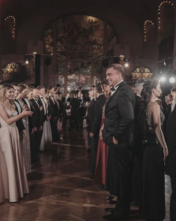
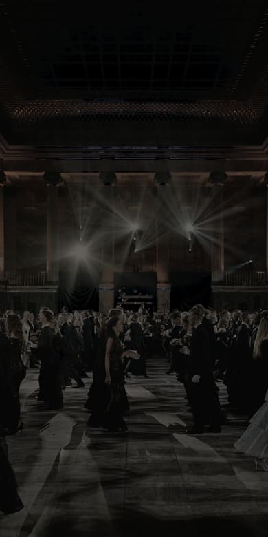
Ваша история. Ваш вечер.
обсудить вечерСвадьба, юбилей, день рождения — семейный праздник, за которым стоит история семьи. Бал — это возможность собрать вместе несколько поколений близких людей и подарить им вечер, который запомнится на годы.

Годовщина компании, новогодний приём, вечер в честь партнёров, презентация бренда, награждение лучших сотрудников. Балом можно завершить конференцию или форум, отметить открытие новой площадки и превратить деловое событие в настоящий праздник.
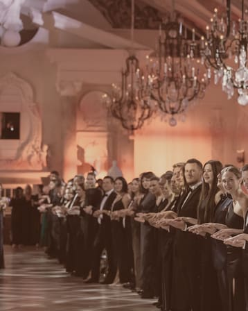
01 — Подготовка
Мы начинаем не с анкеты и не с договора, а с разговора.
Вы рассказываете о своём вечере: для кого он, почему именно бал, что для вас важно. Мы также спрашиваем о вещах, которые обычно не попадают в бриф, — каким вы хотите увидеть результат вечера.
Мы строим её на основе вашего рассказа: локация, музыка, программа и детали связаны между собой и с темой события.
Если вы или ваши гости хотите подготовиться, мы проводим танцевальные уроки. Так все начинают чувствовать себя на балу уверенно.
Мы рядом с первого момента до последнего танца. Вам не нужно заниматься координацией и считать минуты — вы просто отдыхаете.
Фото и видео, к которым вы возвращаетесь после события. Не для соцсетей — для себя.
02 — Программа
Сценарий каждого бала пишется заново — под ваших гостей, локацию и настроение.
18:00
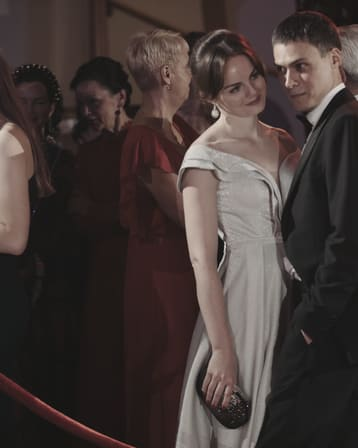
Сбор гостей. Фуршет, знакомства, в зале играет оркестр.
19:00
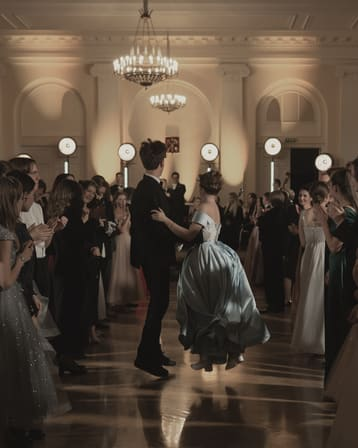
Торжественное открытие. Выходят хозяева бала, затем — вальс для всех гостей.
19:20
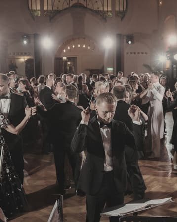
Танцевальная программа. Вальсы, кадрили, свинг. Танцмейстер ведёт зал.
21:50
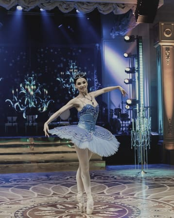
Шоу-номера. Всё внимание на паркете.
22:20
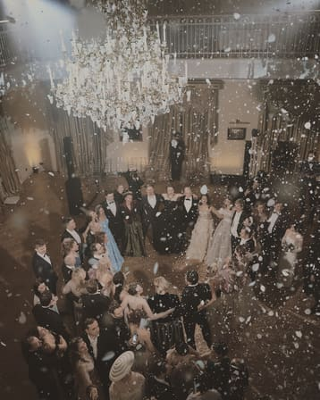
Финальный вальс — и вечер завершается.
Это ориентир, а не готовая программа: от тридцати гостей до двухсот.
03 — Музыка
Музыка — главный инструмент управления атмосферой. Она задаёт темп вечера раньше, чем это делает программа.
Формат 01 / 03
Вальс · кадриль
Симфонический оркестр подходит для торжественных частей. Живой звук подчёркивает важность события. Это хороший выбор для венского вальса и кадрили.
Свинг · фокстрот · латина
Духовой оркестр или джаз-бэнд помогают гостям расслабиться. Свинг, фокстрот и латина звучат живо — под них хочется двигаться и знакомиться. Такой формат снимает официальность и запускает общение.
Хиты · быстрые ритмы
Музыкальная группа — для активной части вечера. Знакомые хиты и быстрые ритмы нужны, чтобы разогреть зал, поднять настроение и завершить вечер на высокой ноте.
04 — Танцы
— не хореограф в привычном смысле. Он не ставит номера и не учит движениям во время события. Его задача — атмосфера и вовлечение: он снимает скованность и подключает к танцам даже тех, кто планировал постоять в стороне.
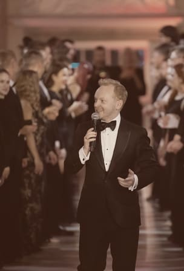
Он организует парные танцы, ротацию партнёров и общие фигуры. Гости знакомятся без неловких пауз и вопроса «с кем мне танцевать». Уговаривать никого не приходится: выйти танцевать оказывается проще, чем весь вечер быть зрителем.
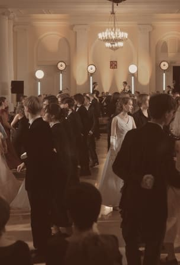
Главное — гости уносят яркие впечатления: они танцевали под живой оркестр, знакомились с новыми людьми и пробовали то, на что раньше не решались. Эти эмоции остаются надолго — именно их гости вспоминают и обсуждают после вечера.
Выйти танцевать оказывается проще, чем весь вечер быть зрителем.
Он чередует спокойные вальсы с динамичными танцами и следит за таймингом и настроением зала. Вечер не провисает, гости не устают, программа идёт ровно.
05 — Шоу
Во время шоу-номера весь зал смотрит на танцпол.
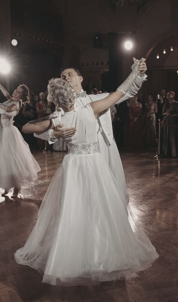
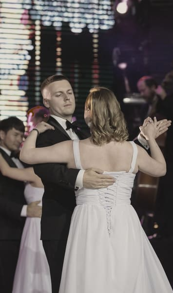
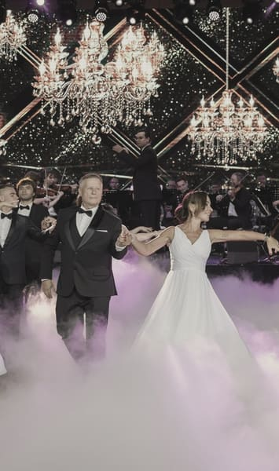
Профессиональные танцоры исполняют поставленный номер: сложные элементы, костюмы, техника, отработанная годами.
Гости танцуют в паре с танцорами или в их окружении. Танцоры держат ритм и поддерживают, поэтому даже простые движения в таком формате выглядят впечатляюще.
Сотрудники компании, друзья именинника или свадебная пара могут выступить: хореографы подбирают для них движения, которые легко разучить, а вживую они смотрятся эффектно.
06 — Ассистент
Танцевальный ассистент — человек, который может быть рядом с вами весь вечер: от сбора гостей до финального вальса.
Не настаивает с фразой «давайте танцевать» — подходит, когда видит, что человек готов.
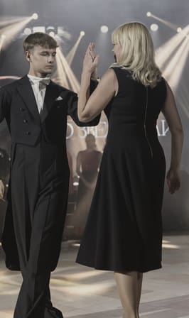
В танце подсказывает движения, держит ритм и помогает чувствовать себя уверенно.
Что нужно от вас
Готовиться заранее и брать уроки не нужно. Вы учитесь прямо в процессе, в комфортном темпе, под оркестр.
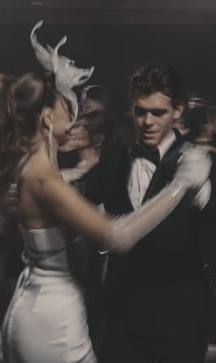
Вы не пропустите танцы
Ассистент включит вас в программу в комфортном для вас темпе.
Ассистент подстраивается под вас, а не наоборот.
07 — Уроки
Первый урок
Страх исчезает: гости приходят на бал, уже зная базовые движения.
На самом уроке
Не лекция — показываем: как пригласить, как принять или отклонить приглашение, как двигаться в паре. С юмором, без давления.
От урока к уроку
Нет чужих — только свои. Гости знакомятся ещё до бала.
08 — Этикет
Несколько правил, которые делают вечер комфортным для всех. Не строгие нормы — рекомендации.
Первыми приглашать на танец. Следить, чтобы партнёрше было комфортно.
Принимать приглашения или корректно отклонять их. Следовать темпу партнёра.
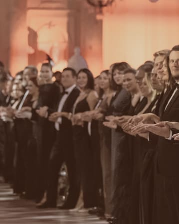
Запоминать заранее не нужно —
Танцмейстер подскажет на паркете. С юмором, без давления.
09 — Дресс-код
Когда все гости одеты в одном ключе, зал выглядит цельно, и каждый чувствует себя частью общего праздника.
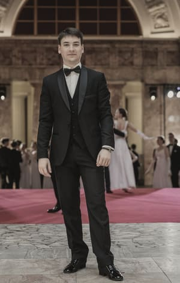
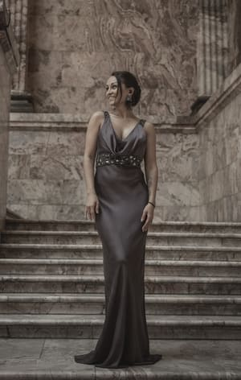
Белый носят только хозяева бала и почётные гости — это часть протокола.
10 — Вечера
Одна история в качестве примера — не «портфолио» и не «проекты», а конкретное событие.
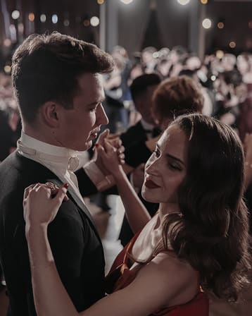
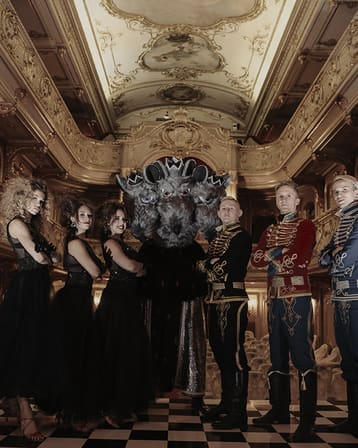
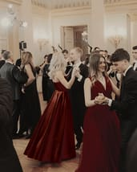
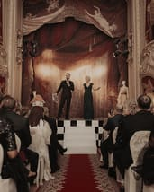

Компания отмечала двадцатилетие. Ей нужен был формат, соответствующий масштабу события, — не стандартный корпоратив с банкетом, а бал.
Это было закрытое торжество в Юсуповском дворце, в рамках которого основательница компании Виктория Саава принимала любимых клиентов, итальянских партнеров, приглашенных звезд и представителей прессы.
11 — Связаться
Режиссёры, хореографы, стилисты, декораторы — люди, которые работают вместе годами. Мы не делаем шаблоны.
Расскажите о вашем вечере. Отвечаем в течение дня, первая встреча — разговор без обязательств.
оставить заявку